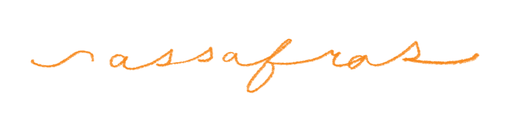

Call for Submissions
Sassafras invites submissions for its inaugural issue, The Tower. Through this issue, we aim to establish our identity as an experimental take on academic publications with a focus on challenging hierarchies within and beyond academia. Central to this is the notion of the 'Ivory Tower', which captures the tendency of academic institutions to enclose knowledge within exclusive spaces, reinforced by paywalls and specialised jargon. We seek new ways of addressing such hierarchies both inside and outside of academia, with the firm belief that knowledge is for everyone.
As a complex historical symbol, The Tower evokes images of hubris, grandeur, hierarchy, and exclusion. Where shadows of Towers continue to draw lines across social and spatial boundaries, speaking to how cities, institutions, and governments form and inform themselves and others. Submissions are open to all kinds of exploration and experimentation surrounding the central theme, encouraging contributors to explore issues relating to power dynamics, spatial relationalities (up vs down), social hierarchy, etc. Some sub-themes that have inspired us are:
- The Panopticon — towers of surveillance in our daily lives.
- The Tower of Babel — the human desire towards reaching 'the divine'.
- The Berlin TV tower and 'height' as a historical expression of progress.
- Anti-intellectualism — how do we address the diminishing trust in academia?
- How the physical framework of the tower as an enclosed/defensive structure helps us frame power in the everyday, and how we attempt to subvert it.
- …And other such examinations.
This list is indicative of the broad ideas that inspire us and is not exclusive. Any interpretations of the symbol of 'The Tower' are welcome.
Link for submissions forthcoming.